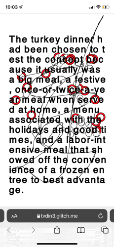

⚠︎ Text contains flashing images.
I’ve been fascinated with Americana, more specifically TV dinners. The American TV dinner tells a tale of midcentury innovation and shifting dynamics within both the household and the population’s relationship with technology.
 Stephen Shore, New York, New York, September-October 1972.
Stephen Shore, New York, New York, September-October 1972.Between a survey and conversations with people about their experiences with frozen food, I appreciated not only how personal food practices can be, but also the sheer range of socioeconomic topics the TV dinner can address. Some folks, reminded of military rations, were interested in its compact form, while others wondered about the connections between prepackaged food and wellness/diet culture in contemporary America. With such a rich subject one of my main challenges soon became, how might I present takes on the TV dinner — an undeniably retro cultural artifact — in a way that feels native to digital interaction?
I knew that I wanted to make something generative and introspective. What initially drew me to TV dinners was how spectacular their promise of homecooked goodness — albeit prepared by faceless yet familiar corporations — was, and how expectations and reality seldom seemed to match up. It was this kind of awkward, uncomfortable feeling that I was after.
Just as early advertisements of the TV dinner took advantage of the then-novelty status of television sets, I decided to mess with mobile web browsing because it felt more intimate and invasive than the more ambient experience of reading on desktop. Early sketches of the site saw me drawing literal visual metaphors of the average TV dinner, from the structure of stacked boxes in the freezer to the gesture of cutting and poking holes in the tray’s plastic film.
This approach soon fell flat, as I was still relying on relatively default expectations of how reading on mobile ought to be. Instead of dragging a finger across the screen, what if I treated the phone as a tray, with the website’s text sliding around like chunks of food as the reader tilts their screen?
Some intermediate testing, with especial attention to the speed of trailing text.
After narrowing my focus to just the phone’s orientation in space, I started playing around with the text’s viscosity. My refined direction also meant that with an unfamiliar way of navigating the website, I had to understand how people intuitively interact with touchscreens. Because I broke up the narrative into Now This-styled short chunks of excerpts and quotes, it was important that the interface be friendly enough for readers to learn on the go. Offering enough affordances and cues while avoiding condescending instructions became a top priority.
The result of this is a microsite that responds to data from the phone’s gyroscope, set to saturated colors referencing frezer technology ads from the sixties. As an exploration into the potential of disrupting familiar reading experiences, Fresh Not Frozen leans into the subdued frenzy of jumping across mobile applications and invites readers to dedicate some time to honoring this rather mundane consumer good.
